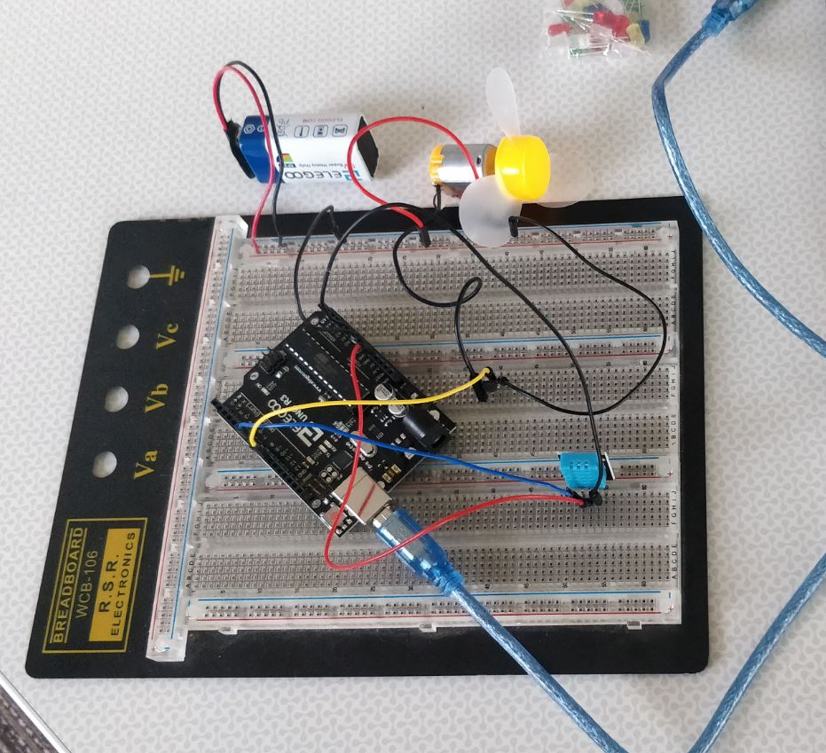
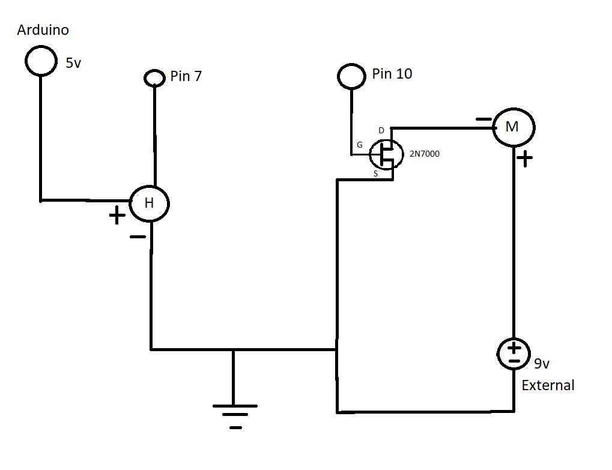
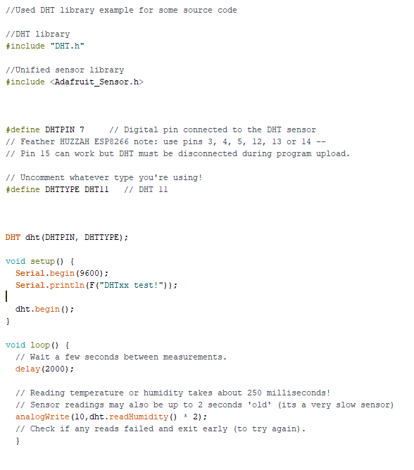

Tristin Donyes' Assignment 4!

Here is all the documentation for assignment 4!
Circuit

This is a picture of the circuit I built
Schematic

This is the schematic for the circuit. H is the humidity sensor, M is the motor,
and the G,D, and S terminals belong to the Mosfet
Code

For this code I imported the DHT library and the Unified Sensor library
The sensor reads the humidity value, then the analogWrite statement programs the powerup for the fan
I added a times 2 multiplier so it was easier to see the fan spin (because the initital value wasn't powering it very much)